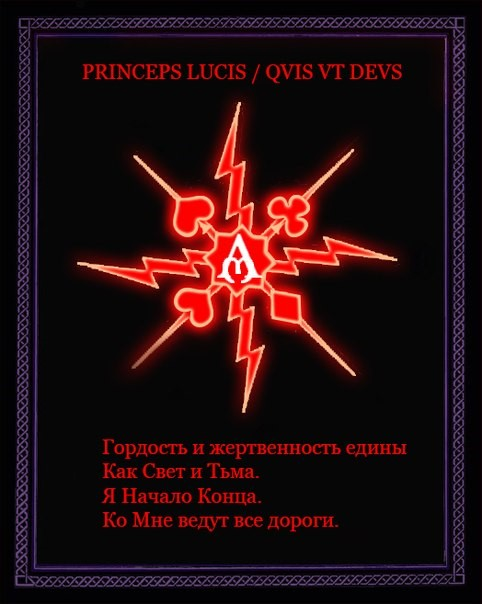

Eternal Fire
Подмена сатанизма
или
К чему приводит религиозное восприятие
«Бесконечны лишь Вселенная и глупость человеческая. Хотя насчет первой у меня имеются сомнения». А. Энштейн |
То, что о сатанистах с завидной регулярностью твердят совершенно нелепые вещи, уже давно ни для кого не удивительно. Некоторые высказывания (как, например, нижеприведенные) выглядят даже весьма забавно.
«На ритуальность убийства указывает и большая пентаграмма на полу комнаты парня в виде шестиконечной звезды — символа оккультной философии».
«…мало кто знает, что “ЛЮЦИФЕР” — это ещё одно имя Бога иудеев, наряду с именами “ЯХВЕ” и “ИЕГОВА”!».
Всегда есть люди, у которых отсутствует собственное мышление, они ждут, когда им изобретут их мировоззрение, подробно расскажут, что и как нужно делать, чтобы можно было «правильно» всё повторить, не задумываясь о целесообразности своих действий. Если говорить об интернете, то сначала в сети присутствовали так называемые «подсатанники», которые в своем мировоззрении вполне обходились без Сатаны, затем появились поклонники В. Скавра, которые, наоборот, ориентировались на красивые и пафосные воззвания, на чем всё и заканчивалось. Разумеется, подобные персонажи никакой серьезной проблемы не представляют, так как любому хоть немного способному думать ясно, что к сатанизму они не имеют отношения никакого абсолютно.
Гораздо острее стоит другая проблема. В последнее время всё чаще и чаще можно встретиться с религиозным восприятием сатанизма, представлением его этаким христианством наоборот. Причем с каждым днем популярность такой подмены этого понятия всё растет и растет, грозя тем самым в ближайшем будущем вылиться в новое движение и в вырождение сатанизма как такового. И на этом мы остановимся поподробнее.
Откуда это взялось исторически, понять легко: религиозное мышление было повсюду, соответственно встречалась и логика вида «если бог не помогает, можно попытаться обратиться к противоположной стороне». Но называть ли это сатанизмом?!
Подобные взгляды в любом случае остаются в рамках христианства, так как являются всего лишь его инверсией, и дальше этих рамок они никоим образом не выходят. Это легко можно увидеть, лишь начав анализировать их подход вида «мы против бога, за Сатану», который неверен уже в своем корне, так как отдает дуализмом, свойственным человеческому восприятию, никак не сатанинскому, как и многочисленные «благочестивые» истории, описанные в средневековом европейском фольклоре — о тех, кто хотел продать душу за блага, а потом смухлевать и не отдать.
Дьяволопоклонничество (оно же религиозное восприятие) присутствовало и в старинных гримуарах, таких как Красная Книга Аппина.
Поскольку многим свойственно полагать, что раз древние тексты повествуют о подобном, то это a priori имеет Великий Смысл, подобное искажение продолжает процветать и находит своих последователей, выливаясь всё в новые и новые формы.
Ниже приведены выдержки из всё той же Книги Аппина.
«Отрекись от Распятого, ибо он мерзость, и следуй пути, которому следовали твои предки. Поклоняйся Князьям Тьмы и служи Им».
«Все это делалось задолго до отвратительного рождения Сына Божьего и будет делаться в попрание гнусного имени его».
«Богохульство во время обрядов не может быть излишним».
Из вышеизложенного становится очевидным, что идет призыв к довольно странным и не свойственным сатанисту деяниям, а именно:
- Поклонение
- Борьба с богом (дуализм в мировоззрении) и божьим сыном (уклон в христианство)
- Богохульство (всё то же христианство наоборот)
Сразу хотелось бы расставить все точки над «i», раскрыв такое понятие как «бог», дабы в дальнейшем не возникало путаницы касательно этого и стала наглядно очевидна подмена.
Это понятие хорошо раскрывал Warrax в своей статье «Теология сатанизма»:
«Прежде всего нам следует согласиться, что под словом "бог" подразумевается:
- всесовершенная и вечная, то есть всереальнейшая сущность (…);
- сущность, сотворившая все, или, точнее, являющаяся первоосновой и первопричиной творения (…);
- сущность разумная, личность (…). […]
Но и это — некоторое сужение понятия бога, верное для монорелигий. Зачем, скажем, Бога всенепременно воспринимать как личность? Под этим термином можно понимать, к примеру, Силу в метафизическом и оккультном смысле, ну а наличие соответствующего архетипа вообще очевидно (как и эгрегора). Точно также для сатанизма безразлично, является ли Бог первопричиной или демиургом этого мира, важно лишь то, что Бог в той или иной форме проявлен в настоящем».
Собственно, из-за неверного понимания этого понятия, дуализма в мировоззрении и веры в некого Бога-Демиурга-Создателя, веками живущего в людских галлюцинациях, рождаются также такие направления, как некий «темный гностицизм». Как яркий пример — MLO (Misanthropic Luciferian Orden, который сейчас уже Temple of The Black Light), которые так держатся за свои принципы дуализма, что, заявляя, что они с Сатаной, всё же отказываются причислять себя к сатанизму, и считают себя гораздо ближе к христианским гностикам, чем к сатанистам, о чем открыто говорят в своём интервью:
«…we have nothing in common with the most often atheistic and materialistic vulgarity sold to the blind under the guise of “Satanism” ...we would indeed have more in common with Christian Gnostics».
Как уже было сказано, под богом можно понимать и Силу. В. Скавр в своём «Codex Tenebrarum» пишет:
«Свет выделился в движении Хаоса от одного из начал Хаоса, и отделился от Него, явив средоточие айн-соф, как зерно противоположного в развитии Хаоса.
Свет стал причиной войны в Хаосе, продолжающейся до последнего срока Времени; Ублюдочный по своей сути, чуждый стремлению Хаоса, Он стал причиной разделения и смешения, противных природе Тьмы, и изменил суть вещей в Хаосе.
Свет, как сила, возникшая от одного из возможных начал Хаоса, в Хаосе присутствует, и обретает реальность собственного бытия, паразитируя в Хаосе;
Свет существует процессами, ведущими к разрастанию в Хаосе и к изменению сути Хаоса в собственную суть, что есть стягивание существа Хаоса к небытию во Свете;
Свет несет гибель бытию Хаоса, насаждая собственное бытие.
Потому Свет есть Враг; Он есть то, что должно быть уничтожено, ибо, разрастаясь, Он изменяется, и становится сильнее».
Из вышеизложенного становится вполне ясно, какие цели преследует сатанист. Зачем поддерживать сказки о каком-то боге или демиурге, которого никто никогда не видел (самое смешное, что об этом говорит даже Библия), когда очевидно, что бороться нужно с божественным (само это понятие исчерпывающе раскрывает Warrax в своей статье «Essentia»).
«Сатанисты исходят из того, что сам человек, а так же силы действия и противодействия Вселенной ответственны за всё происходящее в природе, и не заблуждается, что кому-то до этого есть дело. Не будем же сидеть сложа руки и принимать “судьбу” без того, чтобы предпринять что-либо только потому что так говорится в такой-то главе и таком-то псалме». A.Ш. ЛаВей «Сатанинская Библия»
«Мы разрушаем все препятствующее развитию, росту и экспансии темного духа путями непроторенными, путями пламенеющими, ненасытностью нашей природы». V. Scavr «Maledictum».
Как я уже говорила, склонность к дуализму — это человеческое. Так картина мира выглядит проще и нагляднее: не надо думать, надо только выбрать сторону. В христианской модели можно быть как за бога, так и против (но всё равно без бога никуда).
В «Теологии сатанизма» Warrax указывает на неустранённую дуалистичность в описании психологического аспекта в «Princeps Omnium»: «…структура Pandemonium'а не содержит Бога даже как абстрактную Силу Deus'а. Ад — место, где Бог не может появиться и не может проявиться в какой-либо форме», а окончательно дуализм «изгоняется» в Ad usum externum Liber I: «Тьма, Хаос, Бездна, Ад», где достаточно чётко формируется «философская база» сатанизма.
Не будем сейчас говорить о вреде религиозного восприятия в целом (об этом уже есть замечательная статья), а займёмся узким вопросом дуализма как наиболее «замаскированным» и потому наиболее опасным.
Когда дуализм проповедуют в форме: «Все еретики от Сатанизма проповедуют нахождение по ту сторону от добра и Зла, что, без сомнения, является желанием иметь возможность проявлять белосветнические чувства и стремления и не быть при этом уличенными в сих прегрешениях пред Князем Тьмы… Мы же верим в чистое Зло — совокупность всего негативного и деструктивного без вкраплений созидающего начала» или «— Кто такой Сатана/Дьявол? / — V666: Полный, открытый, безоговорочный Противник всего», то, кроме таких же «мыслителей», всерьез это никто не воспримет. Гораздо хуже, когда дуализм «нет сатанизма без бога» проникает косвенно.
Сразу хотелось бы напомнить, что поклонение противоречит сатанизму; выступать против неведомого «Творца», уничтожать свою личность — занятия, неприемлемые для сатаниста.
Многие со мной не согласятся, сказав «Это не поклонение, это уважение, почитание и.т.д.». Что ж, давайте сравним.
«Инфернус Державный преклоняет только одно колено и только пред своим Отцом» © V. Scavr «Maledictum»
А Вот — Scavr в более поздней книге «Codex Decium»:
«Отец Сатана, всё, что имею я, Тебе принадлежит, во имя Тебя я создаю и разрушаю, извращаю божественное и властвую».
Сравните: «Ибо никто из нас не живет для себя, и никто не умирает для себя; а живем ли — для Господа живем; умираем ли — для Господа умираем: и потому, живем ли или умираем, — всегда Господни» (Рим.14:7-8).
Идет очень явная и существенная подмена. Здесь нельзя не провести параллель с «откровением от бога», полученным монахом Серафимом Вырицким.
«Ты дорог в очах Моих, многоценен, и Я возлюбил тебя, и потому для Меня составляет особую отраду воспитывать тебя. Когда искушения восстанут на тебя и враг придет, как река, Я хочу, чтобы ты знал, что ОТ МЕНЯ ЭТО БЫЛО, что твоя немощь нуждается в Моей силе и что безопасность твоя заключается в том, чтобы дать Мне возможность бороться за тебя.
Находишься ли ты в трудных обстоятельствах среди людей, которые тебя не понимают, которые не считаются с тем, что тебе приятно, которые тебя отстраняют? – ОТ МЕНЯ ЭТО БЫЛО. Я – БОГ, располагающий обстоятельствами».
«Я хочу научить тебя сознавать, что ты — ничто».
«Каждое возникающее затруднение, каждое оскорбляющее тебя слово, каждая помеха в твоей работе, которая могла бы вызвать в тебе чувство досады, каждое откровение твоей немощи и неспособности – пусть будут помазаны этим елеем. ПОМНИ, ЧТО ВСЯКАЯ ПОМЕХА ЕСТЬ БОЖИЕ НАСТАВЛЕНИЕ. Всякое жало притупится, чтобы не коснулось тебя. А потому и положи в сердце своем слова, которые Я объявил тебе сегодня: ОТ МЕНЯ ЭТО БЫЛО. Ибо это не пустое для тебя, но это жизнь твоя».
И скромный комментарий самого Вырицкого по поводу «услышанного»:
«Что же мне, недостойному, сказать на все это? И остается мне только повторить слова апостола Павла: “ИБО ВСЕ ИЗ НЕГО, ИМ И К НЕМУ. ЕМУ СЛАВА ВО ВЕКИ”. Аминь».
А теперь я предлагаю задуматься и каждому для себя ответить на вопрос: «А стоит ли уподобляться раболепным христианам, способным сосчитать лишь до двух? Стоит ли протаскивать их идеи в сатанизм, делая из него подобие их жалкой религии, только наоборот? Стоит ли вместо того, чтобы уничтожать в себе божественное и взращивать Дьявольское, тратить свое время на богохульство? Вместо того, чтобы? находясь в преодолении и саморазвитии, стремиться к единению с Сатаной (не теряя при этом себя), обращаться к нему с воззваниями вида «Я ничто без тебя, направь меня, веди и пр. »? И всю эту религиозною инверсию подавать как сатанизм?
К сожалению, сейчас подобное можно назвать мейнстримом. Уже упомянутый V. Scavr в «Codex Daemonorum» очень верно пишет: «Служите Сатане. Служите не имени, но сути». Но вместе с этим:
«Вам дано владеть всем на земле, но ничто и никто, кроме Дьявола, не должны владеть вами».
«Истинно только то, что от Сатаны, и ничто иное».
«Без Любви Сатаны вы просто люди».
«Сатана дал вам свою Любовь».
Всё это подозрительно что-то напоминает.
Кто-то захочет возразить, что здесь совсем другой контекст, и даже если форма изложения и схожа с христианской, то говорится здесь всё равно о другом. Однако, как повествует известная поговорка: если нечто выглядит как утка, крякает как утка и плавает как утка — то очень вероятно, что это утка и есть. Когда автор постоянно описывает своё мировоззрение в таких словах, то это может означать лишь то, что он таким образом и мыслит. И подобный образ мыслей совсем не вяжется с сатанизмом.
К сожалению, подобных примеров великое множество:
«…верим исключительно и только в Сатану и противостоящего Ему Иегову (и находимся, разумеется, на стороне Сатаны, а не Иеговы). Других богов для нас попросту не существует».
«Сатана — это противник, условно говоря, “верховного бога”, тот, кто находится в постоянной оппозиции к нему. В данный момент непринципиально идет ли речь о жестком противостоянии или простом разделении функций по принципу “кесарю кесарево, а слесарю слесарево”. В любом случае антагонистический элемент будет присутствовать, хотя проявляться он может по-разному. Но важно отметить: Сатана — это не воплощение “противника вообще”, не олицетворение “оппозиционера вообще” — это именно Противник верховного бога, именно, оппозиция миродержцу».
Сатанизм — самостоятельное мировоззрение, не завязанное ни на христианстве наизнанку, ни на демиурге, с которым якобы надо бороться. И сколько бы вы не выступали против Единого, если вы на нем зациклены, то так или иначе он вас подчинил. И если, несмотря на то, что уже многое на эту тему написано, «бог» всё равно не покидает вашу голову, то, вероятно, стоит серьезно задуматься, откуда у вас настолько живучие «тараканы» в голове, и начать бороться как раз с ними. Если, конечно, еще не поздно. Глядя на некоторые «шедевры», начинаешь в этом сомневаться.
Система порталов Inferion — система безусловно рабочая, которая в хороших руках может стать как средством взаимодействия с Адом, так и мощным магическим оружием. Но, как сказал С. Тиунов: «Если что можно сделать неправильно, то обязательно найдется кто-нибудь, кто так и сделает. Самое забавное — у него почти всегда находится куча последователей». И вот уже религиозное восприятие просачивается и сюда… Ниже приведена наглядная иллюстрация к тому, как «божественное», присутствующее изначально в каждом, способно исказить восприятие, особенно если его не уничтожать, а любовно взращивать в себе.
Обратите внимание, как постепенно идет подмена. Порталы, еще недавно воспринимаемые адекватно, постепенно заменяются на «божественные», «светлые», если так уместно сказать. Везде начинают видеться ангелы и христианские мотивы.
 |
 |
 |
|
|  |  |
Казалось бы, очевидно, что христианские ангелы не могут внезапно полезть как образы изо всех порталов (если это, конечно, не портал Falsum), разве что подобные концепции присутствуют в голове индивида изначально. Тогда вполне ясно, что, проходя через призму собственных убеждений и склонностей, они повлекут за собой подобную интерпретацию. Но стоит ли принимать настолько вопиющие ошибки за истину и подменять ими представления о сатанизме? Авторы подобных творений доходят и до таких глубин понимания, как «Здесь ничего из Сатанизма не делается. Проводится инфернальный обряд».
А вообще тут много говорить и не надо, т.к. это не первый пример попытки «осветлить» Inferion. Думаю, все помнят Black Wizard’а, его «Обратный Инферион», стремление к «прямым ценностям» — полное собрание его бреда, которое он счёл за открытие, уже был когда-то выпущен «Апокрифом» как приложение.
Также хочется отметить, что если в индивиде нет Тьмы, то он зачастую склонен бездоказательно заявлять, что в Бездне внутри себя Дьявола нет, а существует он где-то отдельно, внешне. Отсюда у дьяволопоклонников так распространено восприятие Сатаны как Отца, а так же склонность принимать контакт с какой-нибудь сущностью за общение с Дьяволом. Как это бывает на конкретном примере, было описано в прошлом выпуске Апокрифа, повторяться не вижу смысла.
Переход от дуализма к Свету, Добру и прочим извращениям проходит уже логично. Светлые сатанисты — оксюморон, но есть и такое! Разумеется, что называться и являться — не одно и то же, но смотрится всё равно жутко.
Примеры:
Люсьен Гривз утверждает, что сатанизм — это религия, которую «несправедливо оклеветали». «Я думаю, что сатанизм можно определить, как религию, занесенную в маргинальные, непонятые», — объясняет Гривз ABCNews.com. «Люди не думают о сатанизме, как о религии, основанной на доброте, они всегда ассоциируют его с антигуманным, нечеловеческим поведением». В соответствии с информацией, размещённой на сайте, Сатана «обладает состраданием и мудростью ангела». Они верят, что Бог идеален и находится вне физической сферы, так что Сатана руководит Вселенной, как его «доверенное лицо».
Иногда приводит даже к тому, что люди из сатанизма переходят в религию, в ислам, например.
«Ислам — это подчинение воле Бога. Я принял ислам потому, что пришло время, когда мой разум и моё сердце созрели до постулата: «Нет бога, кроме Аллаха и Мухаммад — посланник Его». Всё, во что я верил и что поддерживал до принятия ислама, было в худшем случае неправильным, в лучшем — незначительным». © David Myatt, ранее «традиционный сатанист» из ONA.
Можно встретить мнение, что, несмотря на всё это, есть у тех же гностиков или еще кого-то полезные практики и умные мысли. Безусловно, есть. Никто с этим не спорит. Однако если так смотреть, то и у христиан порою можно встретить какую-то умную мысль. Одну на миллион. Вообще разумный человек (ну или не совсем человек) как раз и должен уметь отделять адекватные и полезные мысли и идеи от профанации. А также учиться на чужих ошибках. Но не стоит опираться на такие «учения» основательно. Естественно, Путей к Сатане множество и у каждого Путь свой. И экспериментировать можно. Нужно. Но абсолютно точно можно сказать, что там, где начинаются религиозные догмы и разменивание на дуализм, сатанизм заканчивается.
Точнее, он там даже не начинался.
Sapienti sat.
2013